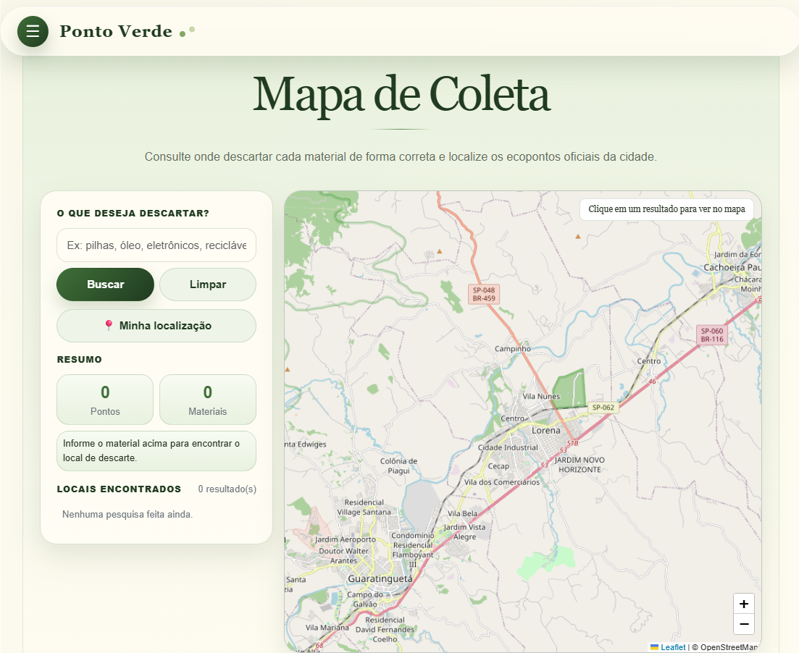

Tecnologia e sustentabilidade para o descarte consciente de resíduos.

Website interativo para facilitar o descarte correto em Lorena-SP, reunindo pontos de coleta e materiais especiais.
O mapa digital e os recursos de IA ajudam usuários a identificar a forma correta de descarte.
Localização de pontos de coleta.
Orientação sobre descarte.
ODS 11, 12 e 13.